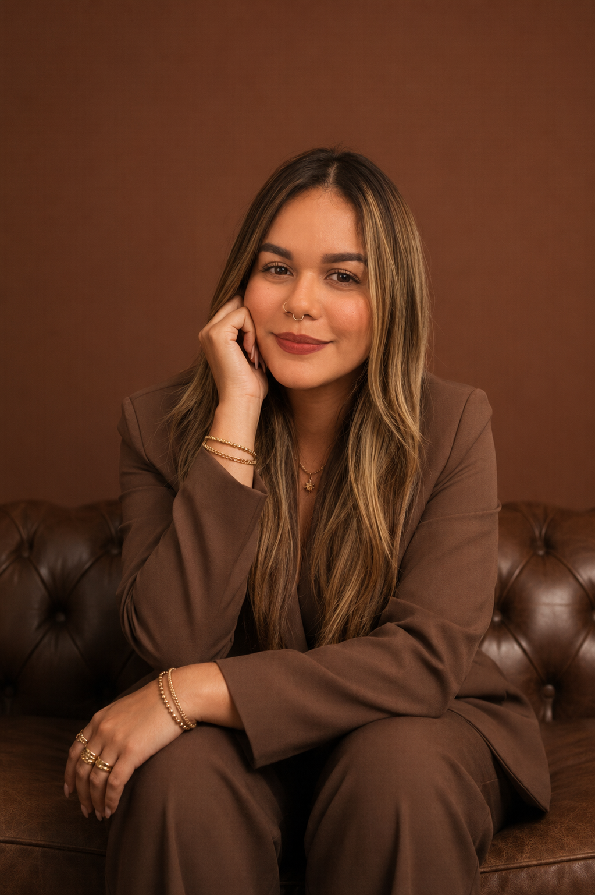

Diseño · Branding · Dirección de Arte
Diseñadora gráfica senior con 8+ años llevando marcas desde el papel hasta la pantalla — de la imprenta offset al content marketing impulsado por IA.

Diseñadora gráfica con más de 8 años de experiencia en branding, marketing digital, gestión de contenido y dirección de proyectos creativos. He desarrollado estrategias de comunicación, campañas digitales, identidades visuales y coordinado equipos multidisciplinarios en distintas industrias.
Hoy me especializo en content marketing, social media y producción de contenido para marcas, integrando herramientas de inteligencia artificial para optimizar procesos creativos sin perder calidad ni intención. Disfruto liderar proyectos de inicio a fin, gestionando múltiples frentes a la vez.
Proyecto 01 — Behance
Proyecto 02 — Prototipo web
Proyecto 03 — Behance
Proyecto 04 — Behance